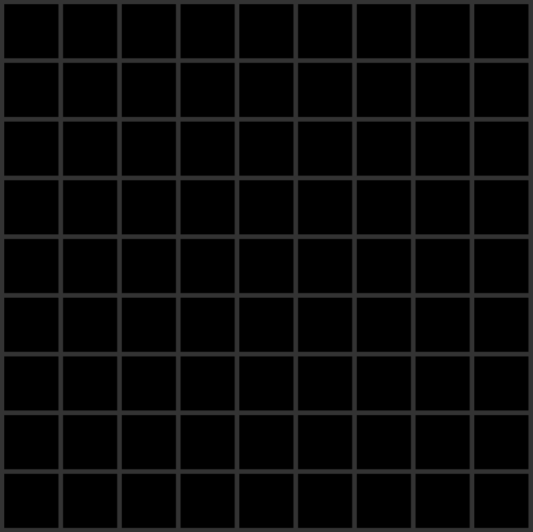
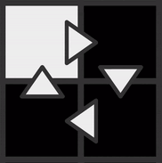

Text Tutorial
Phase 1
Welcome To Or-Cells, The simple but complicated turing
complete digital logic simulator.
You start with a blank board made out
of squares called cells:

To move around, hold control/command, then click and drag. Scroll to zoom.
Each Cell can be on (White) or off
(Black):
To turn a cell on hover over it and press e, To turn it off use q. (Hold to do continuously)
To create a buffer (normall)
connection, hold left click and drag over the line between 2 cells:
Every tick a connected cell will be on if any of it's inputs are on, otherwise off:

To Create a not (flipped) connection right click and drag over the line between 2 cells
(Work in progress, tutorial will be finished soon. For now just try to work it out or join the discord for help)